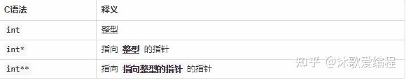

C
1、C语言中基本数据类型有：
字符型：char
短整型：short
整型：int
长整型：long
单精度浮点型：float
双精度浮点型：double
无类型：void
2、有符号数据类型和无符号数据类型。
有符号类型要有关键字signed
有符号数据类型有：
有符号字符型：signed char和char（默认情况下char是有符号类型）
有符号短整型：signed short和short（默认情况下short是有符号类型）
有符号整型：signed int和int（默认情况下int是有符号类型）
有符号长整型：signed long和long（默认情况下long是有符号型）
有符号单精度浮点型：float（默认情况下float是有符号型）
有符号双精度浮点型：double（默认情况下double是有符号型）
无符号数据类型要有关键字unsigned
无符号数据类型有：
无符号字符型：unsigned char
无符号短整型：unsigned short
无符号整型：unsigned int
无符号长整型：unsigned long
3、 内存占用
在C语言里，同一数据类型的无符号型和有符号型占用字节数都是一样的，区别就是是否有符号能表示负数，我们用sizeof关键字获取各种数据类型占用字节数。
各种数据类型在64位系统下占用字节数大小：
字符型：char 占用1个字节
短整型：short 占用2个字节
整型：int 占用4个字节
长整型：long 占用8字节
单精度浮点型：float 占用4字节
双精度浮点型：double 占用8字节
无类型：void 占用1个字节
各种数据类型在32位系统下占用字节数大小：
字符型：char 占用1个字节
短整型：short 占用2个字节
整型：int 占用4个字节
长整型：long 占用4字节
单精度浮点型：float 占用4字节
双精度浮点型：double 占用8字节
无类型：void 占用1个字节
4、格式占位符
字符型：char打印格式%c
短整型：short打印格式%d，unsigned short打印格式%u
整型：int打印格式%d，unsigned int打印格式%u
长整型：long打印格式%ld，unsigned log打印格式%lu
单精度浮点型：float打印格式%f
双精度浮点型：double打印格式%lf
5、c语言缓冲区
printf函数
默认是行缓冲，当输出字符串里有\n或者行缓冲区被填满或者手动调用fflush函数或者程序结束时才会一次性将数据输出（并清空缓冲区）。现在你只要加上一条语句输出换行符，就能在标准输出输出字符串了。
或者我们手动调用fflush也可以强制刷新缓冲区，输出字符串。
scanf函数
scanf函数会从缓冲区顺序读取参数中格式化的内容
如：
#include <stdio.h>
int main() {
int a;
// scanf("%d", &a);
for (int i = 0; i < 5; i++) {
scanf("%d", &a);
printf("%d\n", a);
}
return 0;
}
当(一次性)输入
123 123 324 345 232
时
程序输出
123
123
324
345
232
当输入
3.2
时
程序输出
3
3
3
3
3
（？）
getchar函数
从缓冲区顺序读取一个字符并返回到getchar()调用处
缓冲区的字符一旦被读取就会自动从缓冲区离开
6、运算符
/运算符
两个整数相除结果是商向下取整两个数相除
任意一方是浮点型结果是商保留整数部分和小数部分
* 运算符
乘法运算和除法运算结果有一个不同之处就是，乘法运算的结果不会发生截断，两个数都是整数，结果则是整数。两个数任意一方是浮点数，结果则是浮点数，但是我们通常情况下会遇到类似下面的代码。
#include <stdio.h>
int main() {
float num1 = 5.1;
int num2 = 2;
int num3 = num1 * num2;
printf("num3 = %d\n", num3);
return 0；
}
输出num3=10
其实这是发生了截断，但不是乘法运算的截断，而是在C语言里浮点型强制转换成整型会发生数据截断，小数部分被丢弃了。那么我们怎么知道数据发生了截断呢？看看下面这段代码我们就知道了。
%运算符（取余）
在C语言里%只能对整型进行求余，任意一方是浮点型时，语法错误。
7、c语言中对文件的操作
打开文件
FILE *fp = fopen("/Users/baijiale/Documents/VisualStudioCode/c/CUnderline/Homework/icoding/Experience6/goodsinfo.txt", "r");
fp为指向文件开头的指针
删除文件
remove函数
写文件，读文件
fprintf函数和fscanf函数
关闭（保存）文件
对文件操作完之后要使用fclose函数关闭文件，这样文件才能保存
fclose()中，唯一参数是指向所要关闭文件的指针
8、double的占位符是%lf
9、float, double保留两位小数的方法
占位符%f/%lf写成%.2f/%.2lf
10、使用printf函数的格式化输出即可实现在数字前补0。
例如： printf("a=%06d\n", a); //输出6位 十进制 整数 左边补0，显示 a=001234；这里%06d的0就是指在前面补0占位，6代表 位宽 。
11、!=表示不等于
12、求解两个整数的最大公因数的一种算法：Euclid's algorithm(欧几里得算法)
分别让变量 m 和 n 存储两个整数。如果 n 为 0，那么停止操作，m 中的值是 GCD ；否则计算 m 除以 n 的余数，把 n 保存到 m 中，并把余数保存到 n 中；重复上述操作，每次都先判断n是否为 0。
13、数据类型
- float - 单精度浮点数 - 4 byte
- double - 双精度浮点数 - 8 byte // 小数 - 浮点数（因为小数点可以左右浮动15.6=1.56*10^1）
- int - 整型 - 4 byte
- short - 短整形 - 2 byte
- long - 长整型 - 4 byte // 规定sizeof(long) >= sizeof(int) 即可
- long long - 更长的整型 - 8 byte
- char - 字符数据类型 - 1 byte
14、unsigned表示无符号的（即没有正负号）
如int储存的范围为-32768~32767，而unsigned int储存的范围为0~65535（没有负值）
15、C语言各数据类型所占字节数

16、char的用法
char 类型 只能存放单个字符或字符常量( ASCII 值): char c='A'(必须用单引号将字符引起来) 或者 char=65
字符型在其本质上就是整形，所以当我们遇到97时我们有两种读出方式，第一种以整数形式读出就是97，另一种就是以字符型读出，使用%c指定读出形式，则对照表则为a。
17.以下程序输出值为a的ascii码 :
#include <stdio.h>
int main()
{
int a = 'a';
printf("%d\n", a);
return 0;
}
18、getchar()的用法
getchar()是在输入缓冲区顺序读入一个字符(包括空格、回车和Tab)
第一次getchar()时，确实需要人工的输入，但是如果你输了多个字符，以后的getchar()再执行时就会直接从缓冲区中读取了。
键盘输入的字符都存到缓冲区内,一旦键入回车,getchar就进入缓冲区读取字符,一次只返回第一个字符作为getchar函数的值,如果有循环或足够多的getchar语句,就会依次读出缓冲区内的所有字符直到'\n'.
之所以你输入的一系列字符被依次读出来,是因为循环的作用使得反复利用getchar在缓冲区里读取字符,而不是getchar可以读取多个字符,事实上getchar每次只能读取一个字符。
使用下面的语句清除回车：while (getchar() != '\n');
19、%1d表示按一位十进制格式输出
如：
scanf("%1d%1d%1d%1d%1d", &j1, &j2, &j3, &j4, &j5);
中，当输入12345时分别将1存入j1，将2存入j2...
20、C 语言 int main() 和 int main(void) 的区别
int main(void) 指的是此函数的参数为空，不能传入参数，如果你传入参数，就会出错。
int main() 表示可以传入参数。
在 C++ 中 int main() 和 int main(void) 是等效的，但在 C 中让括号空着代表编译器对是否接受参数保持沉默。c
21、将二维数组传递到形式参数
假设把二维数组 array 传进函数，可以这样写 int (array)[10]，注意这里的 array 必须用括号括起来，否则 int *array[10] 参数相当于是声明了一个数组，该数组有10个元素，其中每个元素都是一个指向整型对象的指针。
但是不能把第二维或者更高维的大小省略，如下面的定义是不合法的：
void Func(int array[][10]);
而要写成：
void Func(int (*array)[10]);
22、二维数组 - 先行后列
如：a[1][2]是二维数组的第2行第3列的元
23、问号(和冒号)表达式（三元运算符）
(表达式1)？(表达式2):(表达式3)
如果表达式1成立则执行表达式2，否则执行表达式3
如：
int a = 5,b = 3;
printf("%d", a > b? a : b);
即：如果a > b，就打印a；如果a < b，就打印b。
问号左侧条件成立时执行冒号左侧表达式，问号左侧条件不成立时执行冒号右侧表达式
注意：
问号表达式是从右向左运行
例如
int a = 8, b = 3, c = 7;
printf("%d", a > b ? a > c ? a : c : b > c ? b : c);
// 即printf("%d", a > b ? (a > c ? a : c) : (b > c ? b : c));
可以分成三步完成
第一步：b>c?b:c 结果为c
第二步：a>c?a:c 结果为a
第三步：前两步的结果分别对应表达式3和表达式2 即a>b?a:c
最终输出结果为a即8
24、指向指针的指针
int **p;
25、EOF，为End Of File的缩写，通常在文本的最后存在此字符表示资料结束。
#include <stdio.h>
int main(){
int n;
while(scanf("%d",&n) != EOF){
?
}
return 0;
}
26、函数参数的双星号类型
如：
void init_list(GoodsList** L) {
FILE *fp = fopen("/Users/baijiale/Documents/VisualStudioCode/c/CUnderline/Homework/ICODING/Experience6/goodsinfo.txt", "r");
*L = (GoodsList*) malloc(sizeof(GoodsList));
(*L)->next = NULL;
GoodsList *temp = (GoodsList*) malloc(sizeof(GoodsList));
GoodsList *pre;
temp->next = NULL;
(*L)->data = temp->data;
(*L)->next = temp;
pre = *L;
temp = (GoodsList*) malloc(sizeof(GoodsList));
while (fscanf(fp, "%s %s %d %s %d %d\n", temp->data.goods_id, temp->data.goods_name, &temp->data.goods_price, temp->data.goods_discount, &temp->data.goods_amount, &temp->data.goods_remain) != EOF) {
}
temp->next = (*L)->next;
(*L) = temp;
}
int main() {
GoodsList* p;
init_list(&p);
return 0;
}
双星号的目的就是使函数能够改变（main函数中的）实际参数p（指针）；如为使函数结束后p指针变为NULL，则函数必须使用双星号，要不没法改变p本身
这里的(*L)完全等价于main函数中的p（而没有形式参数和实际参数的区别）。
这样做可以用函数改变变量p（指针）的值。（p的基类型是GoodsList*，所以参数列表中GoodList**实际是(GoodList*)*，当调用时函数传进来的是p（p本身是一个指针（地址））的地址，为的是可以用函数改变p的值）
如果单独来看这个函数，L就是指针p的地址，*L就是指针p，**L就是指针p指向的对象。并且*L和**L都不遵从形式参数的规则，它们都相当于实际参数 -- 记住这个就行了
类比单星号：
void a (int *t) {
*t = 1;
}
int main() {
int n = 0;
a(&n);
return 0;
}
这样做可以用函数改变变量n的值
27、c语言的命令行参数
之前曾经使用过很多次c语言的命令行参数了，但是总是每次使用的时候都不太确定，需要重新查资料，这次来个总结。c语言的命令行参数非常简单，只需要一个简单的例子就可以说明：
#include <stdio.h>
void main(int argc,char** argv)
{
printf("%d\n",argc);
printf("%s\n",argv[0]);
printf("%s\n",argv[1]);
printf("%s\n",argv[2]);
}
在上面的例子中，我们给main函数传递两个参数，argc和argv。argc是int类型的，它表示的是命令行参数的个数。不许要用户传递，它会根据用户从命令行输入的参数个数，自动确定。argv是char**类型的，它的作用是存储用户从命令行传递进来的参数。它的第一个成员是用户运行的程序名字。
对于上面的例子，我们将其保存为test.c，用gcc编译生成目标文件为test，测试如下：
（1）我们值在命令行下直接运行程序，没有传递其它任何参数：
./test
运行结果如下：
1
./test
第一个输出的是argc，因为我们只输入了./test，所以argc为1，即只有一个命令行参数。后面输出的第一个命令行参数也是./test。接着程序就出错了，因为后面已经没有第二个和第三个参数了，在写实际的应用时，应注意对这一部分进行容错处理。
（2）我们在命令行下输入：
./test hello world
结果：
3
./test
hello
world
可以看到argc为3，第一个参数为./test，第二个参数为hello，第三个参数为world。
（3）我们继续输入：
./test hello world hello world
结果：
5
./test
hello
world
可以看到这时，argc变为5，argv指数出了前面三个参数(因为main函数中只写了三个printf)，当然还可以把后面的两个参数也进行输出。
如果命令行中传递的一个参数包括空格，就需要用用“”将参数扩起来例如：
./test "hello world" "hello world"
我们将hello world整体当作一个参数传递，就需要使用“hello world”。
需要注意的是argv的类型可以是char ** argv，char argv[ ][ ]，char* argv[ ]。
下面再举一个例子，对于C语言的文件操作，可以用到命令行传参的方式来控制用什么方式打开什么文件：
#include<stdio.h>
int main(int argc,char *argv[])
{
int ch;
FILE *fp;
if(argc!=3)
{
printf("Error");
return -1;
}
if((fp=fopen(argv[1],argv[2])) == NULL)
{
printf("Error");
return -1;
}
ch = fgetc(fp);
while(ch!=EOF)
{
putchar(ch);
ch = fgetc(fp);
}
fclose(fp);
return 0;
}
以read的方式打开名字为test.txt的文本:
a.exe test.txt r
28、c语言判断条件在循环内的循环
写成：
while (1) {
...
if () {
break;
}
...
}
即可
29、运算符的优先级
赋值运算符<逻辑运算符<关系运算符<算术运算符
30、switch case语句注意事项
- 当switch后面括号内“表达式”的值与某个case后面的“常量表达式”的值相等时，就执行此case后面的语句。执行完一个case后面的语句后，流程控制转移到下一个case继续执行。如果你只想执行这一个case语句，不想执行其他case，那么就需要在这个case语句后面加上break，跳出switch语句。
- “case常量表达式”只是起语句标号的作用，并不是在该处进行判断。在执行 switch 语句时，根据 switch 后面表达式的值找到匹配的入口标号，就从此标号开始执行下去，不再进行判断。
- 当然你也可以不要 default 语句，就跟 if…else 最后不要 else 语句一样。但最好是加上，后面可以什么都不写。这样可以避免别人误以为你忘了进行 default 处理，而且可以提醒别人 switch 到此结束了。
- 但是需要注意的是，default 后面可以什么都不写，但是后面的冒号和分号千万不能省略，省略了就是语法错误。很多新手在这个地方很容易出错，要么忘了分号，要么忘了冒号，所以要注意！
31、for(;;){循环体}和while(1){循环体}是等价的。
32、continue语句
continue语句的作用是跳过本次循环体中余下尚未执行的语句，立即进行下一次的循环条件判定，可以理解为仅结束本次循环。
注意：continue语句并没有使整个循环终止。
33、前缀自加与后缀自加
前缀自加表达式的值是自加之后的值，而后缀自加表达式的值是自加前的值。
如
int main() {
int a = 0;
printf("%d\n", ++a);
printf("%d\n", a);
return 0;
}
输出：
1
1
而
int main() {
int a = 0;
printf("%d\n", a++);
printf("%d\n", a);
return 0;
}
输出：
0
1
34、getchar略测士换径免包做搜寻债景，看士换径跳初借企静测器件户染债景。
35、const关键字
关键字const用来定义常量，如果一个变量被const修饰，那么它的值就不能再被改变，我想一定有人有这样的疑问，C语言中不是有#define吗，干嘛还要用const呢，我想事物的存在一定有它自己的道理，所以说const的存在一定有它的合理性，与预编译指令相比，const修饰符有以下的优点：
-
预编译指令只是对值进行简单的替换，不能进行类型检查
-
可以保护被修饰的东西，防止意外修改，增强程序的健壮性
-
编译器通常不为普通const常量分配存储空间，而是将它们保存在符号表中，这使得它成为一个编译期间的常量，没有了存储与读内存的操作，使得它的效率也很高。
下面我们从几个方面来说一下const的用法：
一、修饰局部变量
const int n=5;
int const n=5;
这两种写法是一样的，都是表示变量n的值不能被改变了，需要注意的是，用const修饰变量时，一定要给变脸初始化，否则之后就不能再进行赋值了。
接下来看看const用于修饰常量静态字符串，例如：
const char* str="fdsafdsa";
如果没有const的修饰，我们可能会在后面有意无意的写str[4]=’x’这样的语句，这样会导致对只读内存区域的赋值，然后程序会立刻异常终止。有了const，这个错误就能在程序被编译的时候就立即检查出来，这就是const的好处。让逻辑错误在编译期被发现。
二、常量指针与指针常量
常量指针是指针指向的内容是常量，可以有一下两种定义方式。
const int * n;
int const * n;
需要注意的是一下两点：
1、常量指针说的是不能通过这个指针改变变量的值，但是还是可以通过其他的引用来改变变量的值的。
int a=5;
const int* n=&a;
a=6;
2、常量指针指向的值不能改变，但是这并不是意味着指针本身不能改变，常量指针可以指向其他的地址。
int a=5;
int b=6;
const int* n=&a;
n=&b;
指针常量是指指针本身是个常量，不能在指向其他的地址，写法如下：
int *const n;
需要注意的是，指针常量指向的地址不能改变，但是地址中保存的数值是可以改变的，可以通过其他指向改地址的指针来修改。
int a=5;
int *p=&a;
int* const n=&a;
*p=8;
区分(指向)常量(的)指针和指针(是)常量的关键就在于星号的位置，我们以星号为分界线，如果const在星号的左边，则为常量指针，如果const在星号的右边则为指针常量。 如果我们将星号读作‘指针’，将const读作‘常量’的话，内容正好符合。int const * n；是常量指针，int *const n；是指针常量。
3、指向常量的常指针
是以上两种的结合，指针指向的位置不能改变并且也不能通过这个指针改变变量的值，但是依然可以通过其他的普通指针改变变量的值。
const int* const p;
三、修饰函数的参数
根据常量指针与指针常量，const修饰函数的参数也是分为三种情况
1、防止修改指针指向的内容
void StringCopy(char *strDestination, const char *strSource);
其中 strSource 是输入参数，strDestination 是输出参数。给 strSource 加上 const 修饰后，如果函数体内的语句试图改动 strSource 的内容，编译器将指出错误。
2、防止修改指针指向的地址
void swap ( int * const p1 , int * const p2 )
指针p1和指针p2指向的地址都不能修改。
3、以上两种的结合。
四、修饰函数的返回值
如果给以“指针传递”方式的函数返回值加 const 修饰，那么函数返回值（即指针）的内容不能被修改，该返回值只能被赋给加const 修饰的同类型指针。
例如函数
const char * GetString(void);
如下语句将出现编译错误：
char *str = GetString();
正确的用法是
const char *str = GetString();
五、修饰全局变量
全局变量的作用域是整个文件，我们应该尽量避免使用全局变量，因为一旦有一个函数改变了全局变量的值，它也会影响到其他引用这个变量的函数，导致除了bug后很难发现，如果一定要用全局变量，我们应该尽量的使用const修饰符进行修饰，这样防止不必要的人为修改，使用的方法与局部变量是相同的。
36、在C语言中求字符串s的长度时，字符串中所含字符的个数称为字符串的长度，结束标志字符\0'不参加计算。
37、putchar的用法
char a = 'A';
putchar(a);
printf("\n");
return 0;
输出
A
38、整数的不同进制的表示、占位符以及转换
- 八进制必须以0开头，如：012，-012
- 十六进制必须以0x或0X开头，如：0x12，-0x12
- 注：标准的c语言不支持二进制，但有些编译器进行了扩展，这之中的二进制必须以0b或0B开头，如：0b0010，-0b0010
int main() {
print("%d %x %o\n", 125, 125, 125);
return 0;
}
- %d - 十进制
- %x - 十六进制
- %o - 八进制
输出：
125 7d 175
39、浮点数的阶码表示
基本形式：包含小数点的一个带符号的数字序列，接着是字母e或E，然后是一个代表10的指数的有符号值，且必须为整数。其中 e 或 E 被 称为阶码标志，e 或 E 后面的有符号整数被称为阶码。阶码代表 10 的阶码次方。
例如：
-1.56E+12；
2.87e-3；
-8e1.0；错
浮点型常量可以省略正号，可以没有小数点或指数部分。
例如：
2E5；
19.28；
但是不能同时没有二者。
例如：
19；错
浮点型常量可以省略小数或者整数部分，但不能同时省略。
例如：
e3；错
注意：e前后的实数和整数不能省略。
-80.0e;错
注意：浮点型常量中不能有空格！例如：
3.21e -12 /* 有空格，错！ */
3.14e5 /* 有空格，错！ */
注意：浮点型常量有阶码的小数点前面只能有一位非0的数字。
例如：
1.81e7;//对
18.1e6;//错
另外阶码后面只能是整数，不能是整数表达式。
5.0e(1+4);//错
40、c语言返回值类型为字符串的函数
在讨论着四种方法之前，首先要对函数有一个简单的认识，无论是在形实结合时，还是在return语句返回时，都有一个拷贝的过程。你传进来的参数是个值，自然函数在工作之前要把这个值拷贝一份供自己使用，你传进来的是个地址，函数也就会拷贝该地址供自己使用。同样return返回时，如果返回一个值，函数会将该值拷贝一份以提供给主调函数使用，返回的是一个指针（也就是地址），自然拷贝的就是一个地址，供主调函数使用。
先给出一个错误的例子：
#include <stdio.h>
#include <string.h>
char * retstring();
int main()
{
char * name2;
name2 = retstring();
printf("%s\n",name2);
return 0;
}
char * retstring()
{
char name[10];
strcpy(name,"汉青");
return name;
}
编译一下代码，会发现提示一个警告，大概意思就是说返回了一个局部变量的地址。这个程序的输出结果是不确定的，因为我们都知道，局部变量的生存期是就在块内部，这里也就是在函数retstring()的内部，在main函数中，name的内存空间已经被回收。
所以不能返回一个自动变量的字符串。。。
下面给出四种返回字符串的方法：
- 将字符串指针作为函数参数传入，并返回该指针。
- 使用malloc函数动态分配内存，注意在主调函数中释放。
- 返回一个静态局部变量。
- 使用全局变量。
下面是详细解释：
方法一：将字符串指针作为函数参数传入，并返回该指针。
典型的strcpy()函数应该就是采用的这种方法，第一个参数为指向目的字符串的指针,返回值也为这个指针。
char* strcpy(char* des,const char* source) {
char* r=des;
assert((des != NULL) && (source != NULL));
while((*r++ = *source++)!='\0');
return des;
}
方法二：使用malloc函数动态分配，但是一定要注意在主调函数中将其释放，应为malloc动态分配的内存位于堆区，而堆区的内存是要程序员自己释放的。
一个例子如下：
#include <stdio.h>
#include <string.h>
#include <stdlib.h>
char * retstring();
int main()
{
char * name2;
name2 = retstring();
printf("%s\n",name2);
//记住一定要用free释放，否则会造成内存泄露
free(name2);
return 0;
}
char * retstring()
{
char * name;
name = (char *)malloc(10);
strcpy(name,"张汉青");
return name;
}
方法三：返回一个静态局部变量。
一个例子如下：
#include <stdio.h>
#include <string.h>
#include <stdlib.h>
char * retstring();
int main()
{
char * name2;
name2 = retstring();
printf("%s\n",name2);
return 0;
}
char * retstring()
{
static char name[10];
strcpy(name,"张汉青");
return name;
}
这种方法有一个问题： 由于采用了静态局部变量（位于静态区，程序结束时由系统进行释放），这就导致，如果多次调用这个函数，下一次调用会将上一次调用的结果覆盖掉。
C语言中的库函数，tmpnam()函数、getenv()函数等应该都是采用的这种方法，这也就是为什么，使用这样的函数的时候应该立即将返回结果拷贝一份的原因。
方法四： 使用全局变量。
一个例子如下：
char g_s[100];
char* fun()
{
strcpy(g_s, "abc ");
return s;
}
41、数组的初始化
- 数组的初始化遵循零初始化原则
- 数组的初始化不可以是空
-
在多维数组的初始化式中忽略掉内层的大括号是可以的
-
这种写法是合法的：
int arr[] =
{
[10] = 10, [23] = 3, [2] = 1
};
数组中包括24个元素
42、字符数组（字符串）的初始化可以这么写：
int main() {
char a[256];
a = "baijiale"
printf("%s\n", a);
return 0;
}
这会自动在 baijiale 后边加入 分尾0
输出：
baijiale
43、数组初始化中[]的两种不同情况
int main() {
int arr[10] = { 0 };
// 这里的[10]表示数组的长度为10个元素
arr[1] = 1;
// 这里的[1]表示数组的索引，指的是数组的第二个元。（arr[0]表示数组的第一个元）
return 0;
}
C语言中数组元素是由数组下标的索引值进行标注的，第一个元素的索引值是0。
44、arr[i][j]表示数组 arr 的第 i 行第 j 列。
45、表达式不会占用独立的存储单元，只有变量或常量占用独立的存储单元
46、有关函数
- C语言中函数的定义都是相互平行、相互独立的，也就是说在函数定义时，函数体内不能包含另一个函数的定义，即函数不能嵌套定义，但可以嵌套调用。
- 如果函数改变了数组型形式参数的元素，那么这个改变会在相应的实际参数中体现出来。
- 函数定义：
double average(double, double);
是被允许的
- 函数名不允许用数字开头
- 函数名要区分函数名称的大小写
- C语言源程序的基本单位是：函数
- C语言要求函数先定义后调用，将主调函数放在被调函数的后面，就像变量先定义后使用一样。（若函数定义在main函数的下面，则必须在main函数的上面写上函数的
原形声明。）如果不声明，编译时会默认调用函数是int类型。
47、有关变量
- 形式参数拥有和局部变量一样的性质：
自动存储期限和块作用域。 - 定义在函数外部的变量称为全局变量，它定义在函数外边，不属于任何函数和代码块，而属于整个源文件。
48、static（静态的）关键字
static能够延长变量的生命周期，延长为整个程序的运行过程
- static静态局部变量，其在整个源程序中都存在，可以保留上次运行结果。
- 函数中被声明为static(静态的)的变量，只被该函数访问。
- 若有
int t;，此时t的值无定义。（不是0，也不是没有任何值）
49、extern（外部的）关键字
- extern 外部变量，在同一个文件内，为了使全局变量在定义点之前的函数中也能使用，在函数中用extern加以声明。
50、当用scanf从键盘输入数据时，每行数据在没按下回车键（Enter键）前，可以任意修改。
51、取地址运算符&用于得到变量的地址；间接寻址运算符*用于访问指针所指向的对象。
52、int **a;、*a、**a都是什么？
从int* 和int 说起
“int** 是什么” 这个问题其实不难。
我们可以递归分析，先看下int* 是什么，嗯？好像还可以继续递归到int
我们都知道，int 是 C 的基础数据类型整型 ，而多了个 的int 是指向整型变量的指针，那么int** 是什么就不言自明了，列个表：

看到这里，你对int**应该有了个初步的认识，但你可能觉得有点绕，没关系，下面我们写一段代码看看：
#include <stdio.h>
int main()
{
int i = 418;
int* pi;
// 根据上面的表格，我们知道 int* 是指向“整型”的指针，
// 那么 pi 可以保存的是 int 类型的变量 i 的地址：
pi = &i;
int** ppi;
// ppi 可以保存的是 int* 类型的变量 pi 的地址：
ppi = π
// 恭喜你，现在你已经知道了怎么定义 int** 类型的变量和给它赋值
// 我们先写到这里
return 0;
}
那么p，*p，**p分别是什么？
先看最指针自身
乍一看有点多，开始有点慌是吧，没关系，我们先看不带加法运算的前三个：p，*p以及**p
从上面的代码我们已经知道p就是存放int*类型变量的地址的变量
// 从上面暂停下来的地方我们继续
// 我们都知道，在指针前面加个 * 就是“取得这个指针指向的地址里的值”
// 因为 pi 存放的是 i 的地址，那么 *pi 就是取得 i 存放的值，类型是 int
// 同理，*ppi 取得的是 pi 存放的值，类型是 int*
printf("*pi = %d, *ppi = %p\n", *pi， *ppi);
// 输出 *pi = 418, *ppi = 0000002D6FF2FD58 （*pi = 后面的值在每台机器上都可能不一样）
// 既然 *ppi 是 int*，那也就是说我们还可以对它再做一次「解引用」
// 拿到 *ppi 这个地址里存放的值，类型是 int
printf("**ppi = %d\n", **ppi);
// 输出 **pi = 418
这时，你已经掌握p，p以及*p分别是什么了
53、int *p[];和int (*p)[];的区别
对于int *p[]：
先找到声明符p，然后向右看，有[]说明a是个数组，再向左看，是int *，说明数组中的每个元素是int *。所以这是一个存放int指针的数组。
对于int (*p)[]：
先找到声明符a，被括号括着，先看括号内的(优先级高)，然后向右看，没有，向左看,是*，说明s是个指针，什么指针？在看括号外面的，先向右看，有[]，是个数组，说明a是个志向数组的指针，再向左看，是int，说明数组的每个元素是int。所以，这是一个指向存放int的数组的指针。
更详细地说：
前: 指针数组;是一个元素全为指针的数组.
后: 数组指针;可以直接理解是指针,只是这个指针类型不是int也不是char而是 int [4]类型的数组.(可以结合函数指针一并看看......)
int* p[4]------p是一个指针数组，每一个指向一个int型的
int (*q)[4]---------q是一个指针，指向int[4]的数组。
定义涉及两个运算符：*（间接引用）、[]（下标），[]的优先级别大于*的优先级别。
首先看int *p[4]，[]的优先级别高，所以它首先是个大小为4的数组，即p[4]；剩下的int *作为补充说明，即说明该数组的每一个元素为指向一个整型类型的指针。
再看int (*q)[4]。它首先是个指针，即*q，剩下的int [4]作为补充说明，即说明指针q指向一个长度为4的数组。
54、*在不同的语句中的大相径庭的作用
*在定义变量（如p）时只有一个作用，那就是，说明所定义的变量p是一个指针！！！*在非定义指针变量的时候的作用是对地址解引用- 还有就是乘法运算符
55、对字符串数组的定义：char s[] = { "123" };是合法的。当然，也可以没有大括号：char s[] = "123"（这两个定义的数组长度均为5（有'\0'））
56、字符串数组的定义中，第二维长度（行的长度）必须要有，第一维长度（列的长度）可以省略
如：
char ca[][5] = {"A", "BB", "CCC"};
char *ca[3] = {"A", "BB", "CCC"};
均是正确定义
这里解释一下第二条语句：ca是一个指针数组，数组中的三（每）个元保存的分别是三个字符串常量的首地址。
57、预处理
- 在“文件包含”预处理语句的使用形式中,当#include后面的文件名用""括起时,寻找被包含文件的方式是：先在源程序所在目录搜索,再按照系统设定的标准方式搜索。
- 在“文件包含”预处理语句的使用形式中，当#include后面的文件名用<>括起时，寻找被包含文件的方式是：直接按系统设定的标准方式搜索目录。
- 在c程序中凡是以#开头的语句行都是预处理命令行。
- 宏替换不占用运行时间，只占用编译时间。
- 程序的一行只允许一个有效的预处理命令。
58、小写字符转换为大写
if ('a' <= ch && ch <= 'z') {
ch = ch - 'a' + 'A';
}
运算式中字符都用ASCII码来表示
59、c语言的排序神器 - qsort函数
一、头文件
qsort是stdlib.h中的函数，因此使用前需要声明：
#include<stdlib.h>
二、格式
1、参数
qsort函数包含四个参数，分别是：
-
数组名
-
元素个数（从前往后计算）
-
数组元素所占字节（int，double，char等所占字节）
-
排序原则（递增，递减，奇偶交叉等）
int cmp(const void *a,const void *b) {
return *(int*)a-*(int*)b;
}
qsort(num, n, sizeof(int), cmp);
前三个大概没什么好说的，非常简单。主要介绍下第四个的排序原则。
我们通过定义一个函数cmp，通过cmp返回的参数来确定排序规则，需要注意的是：cmp函数的参数需要以const void *a, const void *b的形式来定义，表示a和b的类型是未确定的，在return中进行强制类型转换为int型。*(int*)a-*(int*)b表示以递增顺序，若想以递减只需将a和b换位。
2、不同类型排序
对于不同类型的数组排序，qsort函数的格式都是相同的，唯一不同在于cmp函数中的返回值类型(即需要强制类型转换成的类型)。
1）整型（int）
int cmp(const void *a,const void *b) {
return *(int*)a-*(int*)b;
}
2）浮点数（double）
需要注意浮点数会存在精度损失的问题，所以我们需要通过比较，来返回1或-1，以确定是增序还是降序。
int cmp(const void *a,const void *b) {
return *(double*)a>*(double*)b?1:-1;
}
3）字符（char）
int cmp(const void *a,const void *b) {
return *(char*)a-*(char*)b;
}
4）结构体
struct node {
int i;
double j;
char k;
};
int cmp(const void *a,const void *b) {
return (*(node*)a).i-(*(node*)b).i;
}
以int为例，其他遵循相同原则；若是要逐级比较，只需增加判断即可。
60、c语言中的强制类型转换
强制类型转换是把变量从一种类型转换为另一种数据类型。例如，如果您想存储一个 long 类型的值到一个简单的整型中，您需要把 long 类型强制转换为 int 类型。您可以使用强制类型转换运算符来把值显式地从一种类型转换为另一种类型，如下所示：
(type_name) expression
请看下面的实例，使用强制类型转换运算符把一个整数变量除以另一个整数变量，得到一个浮点数：
实例：
#include <stdio.h>
int main() {
int sum = 17, count = 5;
double mean;
mean = (double) sum / count;
printf("Value of mean : %f\n", mean);
return 0;
}
当上面的代码被编译和执行时，它会产生下列结果：
Value of mean : 3.400000
这里要注意的是强制类型转换运算符的优先级大于除法，因此 sum 的值首先被转换为 double 型，然后除以 count，得到一个类型为 double 的值。
类型转换可以是隐式的，由编译器自动执行，也可以是显式的，通过使用强制类型转换运算符来指定。在编程时，有需要类型转换的时候都用上强制类型转换运算符，是一种良好的编程习惯。
61、goto语句
C 语言中的 goto 语句允许把控制无条件转移到同一函数内的被标记的语句。
注意：在任何编程语言中，都不建议使用 goto 语句。因为它使得程序的控制流难以跟踪，使程序难以理解和难以修改。任何使用 goto 语句的程序可以改写成不需要使用 goto 语句的写法。
C 语言中 goto 语句的语法：
goto label;
...;
..;
.;
label: statement;

在这里，label 可以是任何除 C 关键字以外的纯文本，它可以设置在 C 程序中 goto 语句的前面或者后面。
实例：
#include <stdio.h>
int main() {
/* 局部变量定义 */
int a = 10;
/* do 循环执行 */
LOOP: do {
if(a == 15) {
/* 跳过迭代 */
a = a + 1;
goto LOOP;
}
printf("a 的值： %d\n", a);
a++;
} while (a < 20);
return 0;
}
运行结果：
a 的值： 10
a 的值： 11
a 的值： 12
a 的值： 13
a 的值： 14
a 的值： 16
a 的值： 17
a 的值： 18
a 的值： 19
62、c语言的进制转换
一、任意进制转十进制
#include <stdio.h>
int main() {
int x, p; //x输入数字 p该数的进制数
scanf("%d", &x);
scanf("%d", &p);
int y = 0, product = 1;
while(x != 0) {
y = y + (x % 10) * product;
x = x / 10;
product = product * p;
}
printf("%d", y);
return 0;
}
思路（以十转八进制为例）：从个位开始，取每一位数，乘以8的n次方（n是取到的位数），将所得数依次求和，得到结果。（循环）
二、十进制转任意进制
注意：这里只能用do...while（原因：如果输入的是0，那么我们希望a[0]=0）
int main() {
int in, p;
int arr[256] = { 0 }; // 存放余数（存放目标进制每位的数字）
scanf("%d%d", &in, &p); // p为目标进制
int count = 0; // 这里count++这个式子的值为count自加前的值
do {
arr[count++] = in % p;
in /= p;
} while (in != 0); // 当商不为0时进行循环
for (int i = count - 1; i != -1; --i) {
printf("%d", arr[i]);
}
printf("\n");
return 0;
}
思路（以八转十进制为例）：从右边第一位开始，先求出目标进制的右边第一位，然后再对in做商，如此循环往复，直至求出目标进制的所有位，最后将数组倒序打印。即循环对in的取余与做商。
63、C语言声明 n * m 二维矩阵
c语言数组不能改变长度，所以要用malloc函数动态分配空间，用指针指向数组。
int n = 0, m = 0;
scanf("%d %d", &n, &m);
// c语言数组不能改变长度，所以要用malloc函数动态分配空间，用指针指向数组。
int **arr = (int **) malloc(n * sizeof(int *));
for (int i = 0; i < n; ++i) {
arr[i] = (int *) malloc(m * sizeof(int));
}
for (int i = 0; i < n; ++i) {
for (int j = 0; j < m; ++j) {
scanf("%d", &arr[i][j]);
}
}
64、malloc 函数
- malloc 函数返回的类型是
void*，所以我们使用 malloc 时要进行强制类型转换。 - malloc 函数长度默认单位是 Byte。
如：
(CHAR*)malloc(s->len)
65、对 C语言 中二维数组的理解
对于：
int a[3][4]
它是由 3 个一维数组组成，每个一维数组的大小是 4 个整型元素。而不是 4 个 三元素数组
- 它的元素为一维数组的一维数组（两个维度分开）
int (a[4])[5] - 如：
a[0]是一个 1 维数组，它的长度是 4。 a[i]是一个 1 维数组的名字，其类型为：int [4]。
格式化：
[[0, 0, 0, 0],
[0, 0, 0, 0],
[0, 0, 0, 0]]
66、链表的边界条件
- 只有一个有数据的节点
- 只有头节点